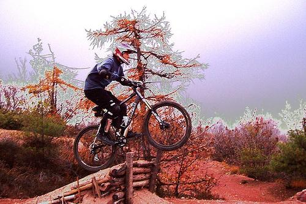
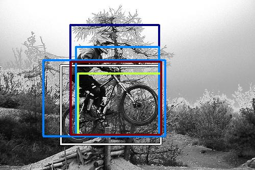
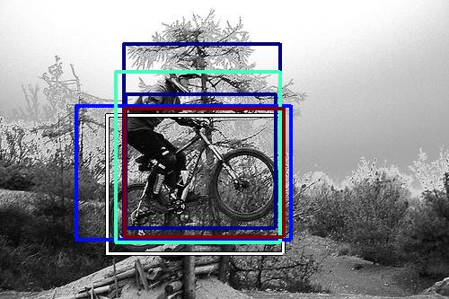

0.579479

0.603471
0.636696

0.639972

0.649166

0.654186

0.677433

0.681651

0.732178

0.772371
| Target image | 0.579479 | 0.603471 |  0.636696 | 0.639972 | 0.649166 | 0.654186 | 0.677433 | 0.681651 | 0.732178 | 0.772371 |
Target image |  4208.033203 |  3206.248779 |  3152.060547 |  2692.152344 |  2593.512451 |  2280.459229 |  2240.845703 |  2184.871826 |  2163.855713 |  2121.397461 |
Target image |  8188.952637 |  7948.572266 |  6845.025391 |  6354.236816 |  6109.477051 |  5244.519531 |  4792.974121 |  4758.910156 |  4730.453125 |  4540.869141 |
Target image |  5967.769531 |  4873.187012 |  4441.253418 |  3128.782715 |  2872.265137 |  2795.649414 |  2488.098877 |  2293.719238 |  2287.828613 |  2214.037842 |
Target image |  4988.307617 |  4974.688965 |  4319.524414 |  3349.969727 |  3238.270264 |  3079.386230 |  2688.344727 |  2488.098877 |  2353.860596 |  2093.742920 |